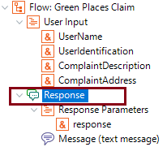
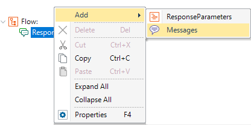
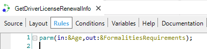
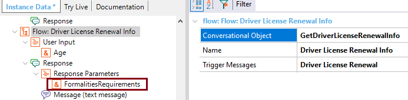
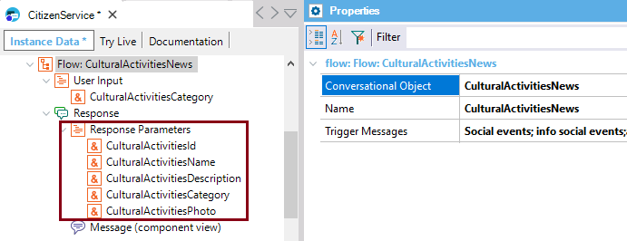
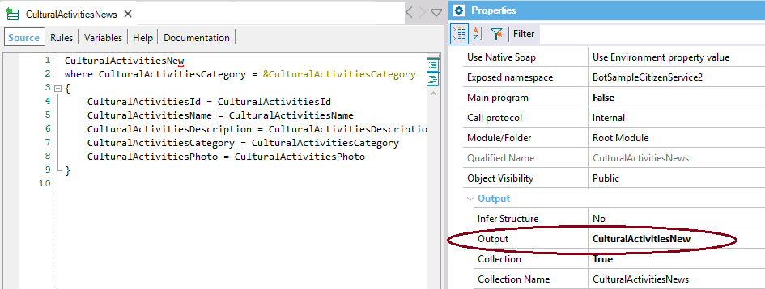
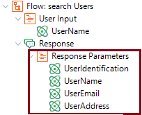

Any Flow of a Conversational instance has a Response. In the Response node, you can model the behavior after the Flow finishes its execution.  The Response node can have Response Parameters and/or Messages children nodes.  Response ParametersThe Response Parameters are automatically added to the structure and are inferred from the Out parameters of the Conversational Object. They are used to be referenced in the Messages property of any Chatbot Message. If the output of the Conversational Object is an SDT or a BC (or a collection of any of them), the Response parameters can also be used to auto-generate the Components when the Message Action property of the Chatbot Message = Component View. That is, when you use the components given at the Generated Component property and Generated Web Component property. You can change the order of the parameters in the list, so as that can be reflected in the form of the Generated SD component or the Generated Web Component. ExamplesI. If the Conversational object is a procedure, the Parm rule is considered. All the Out parameters are automatically added to the list of Response Parameters under the Response node of the Flow. Consider a Flow where the GetDriverLicenseRenewalInfo procedure is set as its Conversational Object. Its parm rule is as follows:  So, the &FormalitiesRequirements parameter will be automatically added to the Response Parameters of the Flow:  II. If the Conversational object is a Data Provider, the Output property of the Data Provider is considered.  CulturalActivitiesNews, in this case, is a Data Provider whose output is a Business Component.  So, the Response Parameters include automatically all the attributes / variables which are the output of the Data Provider. In the previous case, all the attributes of the CulturalActivitiesNew BC. III. If it's a Business Component, only the Search Flow includes Response Parameters (all belong to the Transaction structure):  MessageThe Message node includes the Condition, and the Style to show the message. See Chatbot Message. Considerations about the order of conditional and non conditional responsesSince GeneXus 16 upgrade 10, if you have conditional and non conditional responses, the non conditional responses have to be defined first, and then the conditional responses. This is for Watson and Dialog Flow. Previous to GeneXus 16 upgrade 10, in the case of Watson, you have to define first the conditional responses, and then the non conditional.
|